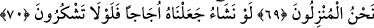
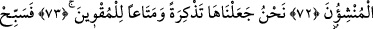
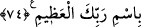
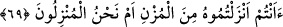
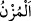
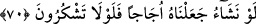

ŞÜKRETMENİZ
GEREKMEZ Mİ?
68. Ya içtiğiniz suya ne dersiniz?
69. Buluttan onu siz mi indirdiniz, yoksa indiren biz miyiz?
70. Dileseydik onu tuzlu yapardık. Şükretmeniz gerekmez mi?
71. Söyleyin şimdi bana, tutuşturmakta olduğunuz ateşi,
72. Onun ağacını siz mi yarattınız, yoksa yaratan biz miyiz?
73. Biz onu bir ibret ve çölden gelip geçenlerin istifâdesi için yarattık.
74. Öyleyse ulu Rabbinin adını tesbih et.
“Ya içtiğiniz” tatlı “suya ne dersiniz?” Suyun bir çok faydası varken bu kadar
özellikleri içinde içilme vasfının özellikle zikredilmesi, suyla alâkalı hususların içinde
içilme özelliğinin en önemli olmasıdır.
69. Buluttan onu siz mi indirdiniz, yoksa indiren biz miyiz?
“Buluttan onu siz mi indirdiniz.” Âyette geçen__WORD__ (müzn) kelimesinin tekili müzne
olup, “suyu çok tatlı beyaz bulut” anlamındadır. “Yoksa” onu kudretimizle “indiren biz
miyiz?” Âyette geçen ru’yet kelimesi bilmek mânâsına alınırsa soruya bağlı bir fiil
olur. Görme veya tanıma mânâsına alınırsa, cümle başlangıç hâlinde soru cümlesi olur
ki, er-Rıza’nın tercih ettiği görüş de budur.
70. Dileseydik onu tuzlu yapardık. Şükretmeniz gerekmez mi?